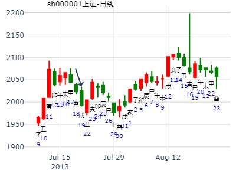

主帖标题: 2月1日沪市大盘
占事：周一沪市大盘
公历时间：2016年1月30日12时45分
干 支：乙未年 己丑月 辛亥日 甲午时
旬 空：辰巳 午未 (寅卯) 辰巳
艮宫：山泽损 坤宫：地泽临
六神 伏 神 【本 卦】 【变 卦】
螣蛇 ▄▄▄▄▄ 官鬼丙寅木 应O-> ▄▄ ▄▄ 子孙癸酉金
勾陈 ▄▄ ▄▄ 妻财丙子水 ▄▄ ▄▄ 妻财癸亥水 应
朱雀 ▄▄ ▄▄ 兄弟丙戌土 ▄▄ ▄▄ 兄弟癸丑土
青龙 子孙丙申金 ▄▄ ▄▄ 兄弟丁丑土 世 ▄▄ ▄▄ 兄弟丁丑土
玄武 ▄▄▄▄▄ 官鬼丁卯木 ▄▄▄▄▄ 官鬼丁卯木 世
白虎 ▄▄▄▄▄ 父母丁巳火 ▄▄▄▄▄ 父母丁巳火
上行趋势
中色股份000758寅月行情。损之临
时间: 2023-01-27 18时43分
干支: 壬寅年癸丑月乙酉日 (旬空: 午未 )
山泽损 地泽临
六神 伏神 本 卦 变 卦
玄武 ▅▅▅▅▅ 官鬼寅木 应Ｏ→ ▅▅ ▅▅ 子孙酉金
白虎 ▅▅ ▅▅ 妻财子水 ▅▅ ▅▅ 妻财亥水 应
腾蛇 ▅▅ ▅▅ 兄弟戌土 ▅▅ ▅▅ 兄弟丑土
勾陈 子孙申金▅▅ ▅▅ 兄弟丑土 世 ▅▅ ▅▅ 兄弟丑土
朱雀 ▅▅▅▅▅ 官鬼卯木 ▅▅▅▅▅ 官鬼卯木 世
青龙 ▅▅▅▅▅ 父母巳火 ▅▅▅▅▅ 父母巳火
主帖标题: 今天又向易友们荐股了，有兴趣进来看下
今日测本周后期走势
2010年 2月 9日 15时 9分 (起卦方式：电脑自动)
元亨利贞网六爻排盘程序 http://www.china95.net
干支：庚寅年戊寅月庚寅日甲申时 日空亡：午未
神煞：驿马－申 桃花－卯 日禄－申 贵人－丑，未
艮宫：山泽损 坤宫：地泽临
六神 伏神 本 卦 变 卦
螣蛇 官鬼寅木 ▅▅▅▅▅ 应 ○→ 子孙酉金 ▅▅ ▅▅
勾陈 妻财子水 ▅▅ ▅▅ 妻财亥水 ▅▅ ▅▅ 应
朱雀 兄弟戌土 ▅▅ ▅▅ 兄弟丑土 ▅▅ ▅▅
青龙 子孙申金 兄弟丑土 ▅▅ ▅▅ 世 兄弟丑土 ▅▅ ▅▅
玄武 官鬼卯木 ▅▅▅▅▅ 官鬼卯木 ▅▅▅▅▅ 世
白虎 父母巳火 ▅▅▅▅▅ 父母巳火 ▅▅▅▅▅
风生水起 下周大盘
2017年2月4日8时50分 (手工指定) 风生水起 下周大盘
立春：2017年02月03日23时49分
干支：丁酉年 壬寅月 壬戌日 甲辰时 （日空：子丑）
艮宫：山泽损 坤宫：地泽临
六神 伏神 本 卦 变 卦
白虎 官鬼丙寅木 ▅▅▅▅▅ 应 ○→ 子孙癸酉金 ▅▅ ▅▅
腾蛇 妻财丙子水 ▅▅ ▅▅ 妻财癸亥水 ▅▅ ▅▅ 应
勾陈 兄弟丙戌土 ▅▅ ▅▅ 兄弟癸丑土 ▅▅ ▅▅
朱雀 子孙丙申金 兄弟丁丑土 ▅▅ ▅▅ 世 兄弟丁丑土 ▅▅ ▅▅
青龙 官鬼丁卯木 ▅▅▅▅▅ 官鬼丁卯木 ▅▅▅▅▅ 世
玄武 父母丁巳火 ▅▅▅▅▅ 父母丁巳火 ▅▅▅▅▅
主帖标题: 电脑卦试测2020年2月上证哪日是顶？
上证2月日顶yliwe s?？
排卦：元亨利贞网六爻在线排盘系统 http://www.china95.net
公历起卦时间：2020年2月16日11时2分 (电脑自动)
干支：庚子年 戊寅月 己丑日 庚午时 （日空：午未）
艮宫：山泽损 坤宫：地泽临
六神 伏神 本 卦 变 卦
勾陈 官鬼丙寅木 ▅▅▅▅▅ 应 ○→ 子孙癸酉金 ▅▅ ▅▅
朱雀 妻财丙子水 ▅▅ ▅▅ 妻财癸亥水 ▅▅ ▅▅ 应
青龙 兄弟丙戌土 ▅▅ ▅▅ 兄弟癸丑土 ▅▅ ▅▅
玄武 子孙丙申金 兄弟丁丑土 ▅▅ ▅▅ 世 兄弟丁丑土 ▅▅ ▅▅
白虎 官鬼丁卯木 ▅▅▅▅▅ 官鬼丁卯木 ▅▅▅▅▅ 世
螣蛇 父母丁巳火 ▅▅▅▅▅ 父母丁巳火 ▅▅▅▅▅
出生：2020 年 性别：男 占事：没填
排卦：元亨利贞网六爻在线排盘系统 http://www.china95.net
公历起卦时间：2020年2月16日11时8分 (电脑自动)
干支：庚子年 戊寅月 己丑日 庚午时 （日空：午未）
神煞：驿马－亥 桃花－午 日禄－午 贵人－子，申
兑宫：泽山咸 坤宫：水天需 (游魂)
六神 伏神 本 卦 变 卦
勾陈 父母丁未土 ▅▅ ▅▅ 应 子孙戊子水 ▅▅ ▅▅
朱雀 兄弟丁酉金 ▅▅▅▅▅ 父母戊戌土 ▅▅▅▅▅
青龙 子孙丁亥水 ▅▅▅▅▅ ○→ 兄弟戊申金 ▅▅ ▅▅ 世
玄武 兄弟丙申金 ▅▅▅▅▅ 世 父母甲辰土 ▅▅▅▅▅
白虎 妻财丁卯木 官鬼丙午火 ▅▅ ▅▅ ╳→ 妻财甲寅木 ▅▅▅▅▅
螣蛇 父母丙辰土 ▅▅ ▅▅ ╳→ 子孙甲子水 ▅▅▅▅▅ 应
主帖标题: 600651下周的走势卦
出生年：75年 性别：女
占事：600651下周走势是否涨
起卦方式：手动摇卦www.iqing.net线上排盘系统
公历时间：2007年3月24日13时59分 星期六
干支：丁亥年 癸卯月 丁巳日 丁未时 (旬空：子丑)
山泽损 地泽临
六神 伏神 本 卦 变 卦
青龙 ▅▅▅▅▅ 官鬼寅木 应Ｏ→ ▅▅ ▅▅ 子孙酉金
玄武 ▅▅ ▅▅ 妻财子水 ▅▅ ▅▅ 妻财亥水 应
白虎 ▅▅ ▅▅ 兄弟戌土 ▅▅ ▅▅ 兄弟丑土
腾蛇 子孙申金▅▅ ▅▅ 兄弟丑土 世 ▅▅ ▅▅ 兄弟丑土
勾陈 ▅▅▅▅▅ 官鬼卯木 ▅▅▅▅▅ 官鬼卯木 世
朱雀 ▅▅▅▅▅ 父母巳火 ▅▅▅▅▅ 父母巳火
损之临。官化子。应爻。
2014年3月6日问一周大盘。
干支：甲午年 丁卯月 丙子日 癸巳时 （日空：申酉）
艮宫：山泽损 坤宫：地泽临
六神 伏神 本 卦 变 卦
青龙 官鬼丙寅木 ▅▅▅▅▅ 应 ○→ 子孙癸酉金 ▅▅ ▅▅
玄武 妻财丙子水 ▅▅ ▅▅ 妻财癸亥水 ▅▅ ▅▅ 应
白虎 兄弟丙戌土 ▅▅ ▅▅ 兄弟癸丑土 ▅▅ ▅▅
腾蛇 子孙丙申金 兄弟丁丑土 ▅▅ ▅▅ 世 兄弟丁丑土 ▅▅ ▅▅
勾陈 官鬼丁卯木 ▅▅▅▅▅ 官鬼丁卯木 ▅▅▅▅▅ 世
朱雀 父母丁巳火 ▅▅▅▅▅ 父母丁巳火 ▅▅▅▅▅
周一辰日大跌，莫非墓子水？机理
相对是一个底部，临卦最后一爻动后，再进入益卦。
变卦是临，容易是临界点。
主帖标题: 2016第13局股市预测大赛
占事：上证指数后市几日走势
公历起卦时间：2016年5月8日3时4分 (按农历时间起卦）
干支：丙申年 癸巳月 庚寅日 戊寅时 （日空：午未）
艮宫：山泽损 坤宫：地泽临
六神 伏神 本 卦 变 卦
腾蛇 官鬼丙寅木 ▅▅▅▅▅ 应 ○→ 子孙癸酉金 ▅▅ ▅▅
勾陈 妻财丙子水 ▅▅ ▅▅ 妻财癸亥水 ▅▅ ▅▅ 应
朱雀 兄弟丙戌土 ▅▅ ▅▅ 兄弟癸丑土 ▅▅ ▅▅
青龙 子孙丙申金 兄弟丁丑土 ▅▅ ▅▅ 世 兄弟丁丑土 ▅▅ ▅▅
玄武 官鬼丁卯木 ▅▅▅▅▅ 官鬼丁卯木 ▅▅▅▅▅ 世
白虎 父母丁巳火 ▅▅▅▅▅ 父母丁巳火 ▅▅▅▅▅
损上九：弗损益之，无咎，贞吉，利有攸往，得臣无家。 象曰：弗损益之，大得志也 临上六： 敦临，吉，无咎
2020年6月前2周大盘，损之临，睽之震。
时间: 2020-06-01 12时44分
干支: 庚子年辛巳月乙亥日 (旬空: 申酉 )
山泽损 地泽临
六神 伏神 本 卦 变 卦
玄武 ▅▅▅▅▅ 官鬼寅木 应Ｏ→ ▅▅ ▅▅ 子孙酉金
白虎 ▅▅ ▅▅ 妻财子水 ▅▅ ▅▅ 妻财亥水 应
腾蛇 ▅▅ ▅▅ 兄弟戌土 ▅▅ ▅▅ 兄弟丑土
勾陈 子孙申金▅▅ ▅▅ 兄弟丑土 世 ▅▅ ▅▅ 兄弟丑土
朱雀 ▅▅▅▅▅ 官鬼卯木 ▅▅▅▅▅ 官鬼卯木 世
青龙 ▅▅▅▅▅ 父母巳火 ▅▅▅▅▅ 父母巳火
时间: 2020-06-01 12时56分
干支: 庚子年辛巳月乙亥日 (旬空: 申酉 )
火泽睽 震为雷
六神 伏神 本 卦 变 卦
玄武 ▅▅▅▅▅ 父母巳火 Ｏ→ ▅▅ ▅▅ 兄弟戌土 世
白虎 妻财子水▅▅ ▅▅ 兄弟未土 ▅▅ ▅▅ 子孙申金
腾蛇 ▅▅▅▅▅ 子孙酉金 世 ▅▅▅▅▅ 父母午火
勾陈 ▅▅ ▅▅ 兄弟丑土 ▅▅ ▅▅ 兄弟辰土 应
朱雀 ▅▅▅▅▅ 官鬼卯木 Ｏ→ ▅▅ ▅▅ 官鬼寅木
青龙 ▅▅▅▅▅ 父母巳火 应 ▅▅▅▅▅ 妻财子水

对比卦
主帖标题: 7月18-22日大盘涨跌卦
占事：7月18-22日大盘涨跌？
公历起卦时间：2011年7月15日16时43分 (手工指定)
干支：辛卯年 乙未月 辛未日 丙申时 （日空：戌亥）
艮宫：山泽损 坤宫：地泽临
腾蛇 官鬼丙寅木 ▅▅▅▅▅ 应 ○→ 子孙癸酉金 ▅▅ ▅▅
勾陈 妻财丙子水 ▅▅ ▅▅ 妻财癸亥水 ▅▅ ▅▅ 应
朱雀 兄弟丙戌土 ▅▅ ▅▅ 兄弟癸丑土 ▅▅ ▅▅
青龙 子孙丙申金 兄弟丁丑土 ▅▅ ▅▅ 世 兄弟丁丑土 ▅▅ ▅▅
玄武 官鬼丁卯木 ▅▅▅▅▅ 官鬼丁卯木 ▅▅▅▅▅ 世
白虎 父母丁巳火 ▅▅▅▅▅ 父母丁巳火 ▅▅▅▅▅
主帖标题: 7月22-26日大盘涨跌卦
占事：7月22-26日大盘涨跌？
公历起卦时间：2013年7月19日15时10分 (手工指定)
干支：癸巳年 己未月 丙戌日 丙申时 （日空：午未）
艮宫：山泽损 坤宫：地泽临
六神 伏神 本 卦 变 卦
青龙 官鬼丙寅木 ▅▅▅▅▅ 应 ○→ 子孙癸酉金 ▅▅ ▅▅
玄武 妻财丙子水 ▅▅ ▅▅ 妻财癸亥水 ▅▅ ▅▅ 应
白虎 兄弟丙戌土 ▅▅ ▅▅ 兄弟癸丑土 ▅▅ ▅▅
腾蛇 子孙丙申金 兄弟丁丑土 ▅▅ ▅▅ 世 兄弟丁丑土 ▅▅ ▅▅
勾陈 官鬼丁卯木 ▅▅▅▅▅ 官鬼丁卯木 ▅▅▅▅▅ 世
朱雀 父母丁巳火 ▅▅▅▅▅ 父母丁巳火 ▅▅▅▅▅

损之临，官化子。下周大盘先升后跌
公历时间：2011年8月31日18时39分
干 支：辛卯年 丙申月 戊午日 辛酉时
旬 空：午未 辰巳 (子丑) 子丑
艮宫：山泽损 坤宫：地泽临
六神 伏 神 【本 卦】 【变 卦】
朱雀 ▄▄▄▄▄ 官鬼丙寅木 应O-> ▄▄ ▄▄ 子孙癸酉金
青龙 ▄▄ ▄▄ 妻财丙子水 ▄▄ ▄▄ 妻财癸亥水 应
玄武 ▄▄ ▄▄ 兄弟丙戌土 ▄▄ ▄▄ 兄弟癸丑土
白虎 子孙丙申金 ▄▄ ▄▄ 兄弟丁丑土 世 ▄▄ ▄▄ 兄弟丁丑土
螣蛇 ▄▄▄▄▄ 官鬼丁卯木 ▄▄▄▄▄ 官鬼丁卯木 世
勾陈 ▄▄▄▄▄ 父母丁巳火 ▄▄▄▄▄ 父母丁巳火
主帖标题: 上证大盘测试局80...
公历：2016年08月03日09时07分 星期三
干支：丙申 乙未 丁巳 乙巳 报数起局阴三局
旬空：辰巳 辰巳 子丑 寅卯 旬首：甲辰
干支：丙申年 乙未月 丁巳日 乙巳时 （日空：子丑）
艮宫：山泽损 坤宫：地泽临
六神 伏神 本 卦 变 卦
青龙 官鬼丙寅木 ▅▅▅▅▅ 应 ○→ 子孙癸酉金 ▅▅ ▅▅
玄武 妻财丙子水 ▅▅ ▅▅ 妻财癸亥水 ▅▅ ▅▅ 应
白虎 兄弟丙戌土 ▅▅ ▅▅ 兄弟癸丑土 ▅▅ ▅▅
腾蛇 子孙丙申金 兄弟丁丑土 ▅▅ ▅▅ 世 兄弟丁丑土 ▅▅ ▅▅
勾陈 官鬼丁卯木 ▅▅▅▅▅ 官鬼丁卯木 ▅▅▅▅▅ 世
朱雀 父母丁巳火 ▅▅▅▅▅ 父母丁巳火 ▅▅▅▅▅
此人奇门局配卦。
主帖标题: 000732 泰禾集团未来七天的走势
公历起卦时间：2021年9月17日21时11分 (电脑自动)
干支：辛丑年 丁酉月 戊辰日 癸亥时 （日空：戌亥）
艮宫：山泽损 坤宫：地泽临
六神 伏神 本 卦 变 卦
朱雀 官鬼丙寅木 ▅▅▅▅▅ 应 ○→ 子孙癸酉金 ▅▅ ▅▅
青龙 妻财丙子水 ▅▅ ▅▅ 妻财癸亥水 ▅▅ ▅▅ 应
玄武 兄弟丙戌土 ▅▅ ▅▅ 兄弟癸丑土 ▅▅ ▅▅
白虎 子孙丙申金 兄弟丁丑土 ▅▅ ▅▅ 世 兄弟丁丑土 ▅▅ ▅▅
螣蛇 官鬼丁卯木 ▅▅▅▅▅ 官鬼丁卯木 ▅▅▅▅▅ 世
勾陈 父母丁巳火 ▅▅▅▅▅ 父母丁巳火 ▅▅▅▅▅
大盘周K解读还在测试中
主题：大盘下周周K解读
己亥 甲戌 辛巳 甲午(申酉空) 己亥年九月十三(2019/10/11 11:43:47)
山泽损 地泽临
腾蛇 官鬼寅木 ○ 应 子孙酉金 ∥
勾陈 妻财子水 ∥ 妻财亥水 ∥ 应
朱雀 兄弟戌土 ∥ 兄弟丑土 ∥
子孙申金：青龙 兄弟丑土 ∥ 艮 兄弟丑土 ∥
玄武 官鬼卯木 ／ 官鬼卯木 ／ 坤
白虎 父母巳火 ／ 父母巳火 ／
注：梅花小孩数理卦，仅供娱乐 。
300171东富龙 走势子丑寅3个月。损之临。
时间: 2022-11-27 15时31分
干支: 壬寅年辛亥月甲申日 (旬空: 午未 )
山泽损 地泽临
六神 伏神 本 卦 变 卦
玄武 ▅▅▅▅▅ 官鬼寅木 应Ｏ→ ▅▅ ▅▅ 子孙酉金
白虎 ▅▅ ▅▅ 妻财子水 ▅▅ ▅▅ 妻财亥水 应
腾蛇 ▅▅ ▅▅ 兄弟戌土 ▅▅ ▅▅ 兄弟丑土
勾陈 子孙申金▅▅ ▅▅ 兄弟丑土 世 ▅▅ ▅▅ 兄弟丑土
朱雀 ▅▅▅▅▅ 官鬼卯木 ▅▅▅▅▅ 官鬼卯木 世
青龙 ▅▅▅▅▅ 父母巳火 ▅▅▅▅▅ 父母巳火
华控赛格到下周五。--损之临，涨停后摇卦见顶。
时间: 2019-12-10
干支: 己亥年丙子月辛巳日 (旬空: 申酉 )
山泽损 地泽临
六神 伏神 本 卦 变 卦
腾蛇 ▅▅▅▅▅ 官鬼寅木 应Ｏ→ ▅▅ ▅▅ 子孙酉金
勾陈 ▅▅ ▅▅ 妻财子水 ▅▅ ▅▅ 妻财亥水 应
朱雀 ▅▅ ▅▅ 兄弟戌土 ▅▅ ▅▅ 兄弟丑土
青龙 子孙申金▅▅ ▅▅ 兄弟丑土 世 ▅▅ ▅▅ 兄弟丑土
玄武 ▅▅▅▅▅ 官鬼卯木 ▅▅▅▅▅ 官鬼卯木 世
白虎 ▅▅▅▅▅ 父母巳火 ▅▅▅▅▅ 父母巳火
午日冲子水暗动见顶。
以上两股当天均涨停。兄弟持世，官鬼寅为喜神，故后面寅日涨。申日跌。
求测人：求测者，男，庚申(1980年)，时间起卦(起卦方式)
占问事宜：焦煤2205下周走势 (卜易居六爻排盘 http://pp.buyiju.com/liuyao/)
公历：2021年12月5日15时37分，星期日。
干支：辛丑年 己亥月 丁亥日 戊申时 (卦身：申)
主变卦 山泽损(艮宫) 之 地泽临(坤宫) [空亡:午、未]
青龙 ▅▅▅▅▅○官鬼丙寅木 应 ▅▅ ▅▅ 子孙癸酉金
玄武 ▅▅ ▅▅ 妻财丙子水 ▅▅ ▅▅ 妻财癸亥水 应
白虎 ▅▅ ▅▅ 兄弟丙戌土 ▅▅ ▅▅ 兄弟癸丑土
螣蛇 子孙丙申金 ▅▅ ▅▅ 兄弟丁丑土 世 ▅▅ ▅▅ 兄弟丁丑土
勾陈 ▅▅▅▅▅ 官鬼丁卯木 ▅▅▅▅▅ 官鬼丁卯木 世
朱雀 ▅▅▅▅▅ 父母丁巳火 ▅▅▅▅▅ 父母丁巳火
紫气东来，西山煤电8.8元未来二周。损之临。
时间: 2021-12-18 14时55分
干支: 辛丑年庚子月庚子日癸未时 (旬空: 辰巳 )
山泽损 地泽临
六神 伏神 本 卦 变 卦
腾蛇 ▅▅▅▅▅ 官鬼寅木 应Ｏ→ ▅▅ ▅▅ 子孙酉金
勾陈 ▅▅ ▅▅ 妻财子水 ▅▅ ▅▅ 妻财亥水 应
朱雀 ▅▅ ▅▅ 兄弟戌土 ▅▅ ▅▅ 兄弟丑土
青龙 子孙申金▅▅ ▅▅ 兄弟丑土 世 ▅▅ ▅▅ 兄弟丑土
玄武 ▅▅▅▅▅ 官鬼卯木 ▅▅▅▅▅ 官鬼卯木 世
白虎 ▅▅▅▅▅ 父母巳火 ▅▅▅▅▅ 父母巳火
同期论坛上有人得同样卦：actuaryzou
求测人：求测者，男，庚申(1980年)，时间起卦(起卦方式)
占问事宜：焦煤2205下周走势 (卜易居六爻排盘)
公历：2021年12月5日15时37分，星期日。
干支：辛丑年 己亥月 丁亥日 戊申时 (卦身：申)
主变卦 山泽损(艮宫) 之 地泽临(坤宫) [空亡:午、未]
青龙 ▅▅▅▅▅○官鬼丙寅木 应 ▅▅ ▅▅ 子孙癸酉金
玄武 ▅▅ ▅▅ 妻财丙子水 ▅▅ ▅▅ 妻财癸亥水 应
白虎 ▅▅ ▅▅ 兄弟丙戌土 ▅▅ ▅▅ 兄弟癸丑土
螣蛇 子孙丙申金 ▅▅ ▅▅ 兄弟丁丑土 世 ▅▅ ▅▅ 兄弟丁丑土
勾陈 ▅▅▅▅▅ 官鬼丁卯木 ▅▅▅▅▅ 官鬼丁卯木 世
朱雀 ▅▅▅▅▅ 父母丁巳火 ▅▅▅▅▅ 父母丁巳火